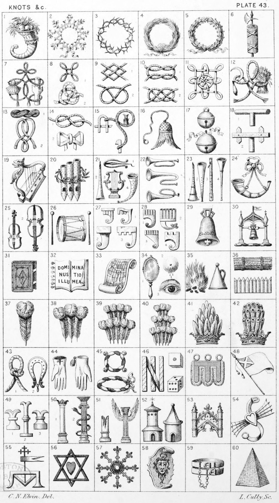

Plate 43.

Plate 43.
- Cornucopia
- Obsidional Crown, or Garland
- Crown of Thorns
- Crown Graminee, or Chaplet of
Grass
- Crown Olive, Olive Chaplet, or
Civic Wreath
- Fasces, or Roman-Fasces
- Dacres Knot. Badge of Dacre an
escallop and staff raguly both ar.
connected by a Dacre Knot
- Bowen's Knot. No. 2. Anne of
Bohemia
- Harrington, or Love Knot. No. 2.
Stafford Knot
- Bourchier's Knot. No. 2. Wakes
and Ormond Knot
- Lacy Knot
- Hungerford Knot. Badge a golden
sickle and garb connected by a
Hungerford Knot
- A Coil of flax, as in the Crest of
Washbourne, and the Heneage
Knot
- True Lover's Knot. No. 2. A Wedding favour as in arms of Latter
A Fetterlock or. to which is attached a rope gu. encircling a
fishes tail erect ppr. having a peg
at the other end gold. Badge of
Lawrence
- Lure, or Leure
- Hawk's, or Falcon's bell, and
- Hawk's bell with jesses
- Hawk's or Falcon's rests, or perches
- Harp
- Three organ pipes enfiled with a
laurel branch. Crest of Delapipe
- Jew's Harp, No. 1. Pipe, No. 2.
Lyre, No. 3. Cornet, No. 4.
- Trumpets
- Hautboy, No. 1. Horn, No. 2.
Flute, No. 3. Trumpet, No. 4.
- Bugle-horn ; or Hunting Horn
stringed
- Fiddle, or Violin ; a Treble Violin,
Violoncello, or Treble Violent
- Drum and Drum sticks
- Clarion, Rest, or Sufflue
- The same. No. 1. Most commonly
used
- Bell, or Church Bell
- Belfry
- Book, or Bible closed
- Book open with seven seals
- Map, or Chart. The Crest of Holton
- Mirror, No. 1. Breast distilling
drops of milk, No. 2, Eye, No. 3
- Bonfire; and Extinguisher
- Fascine; and Park pales
- Ostrich Feather
- A Plume of Ostrich Feathers
- A Double Plume
- Triple Plume
- A Panache, or Upright plume of
feathers
- A Panache of Peacock feathers
- Wrestling Collar ; and a Dog's
Collar
- Falconer's, or Hawking Glove,
and a Falconer's glove pendent
tasselled
- Circular wreath ar. and sa. with
four hawk's bells joined thereto in
quadrature or. borne by Jocelyn.
An Oval Wreath
- Three ingots of Gold, palewise
fretted with another in bend.
Borne by the name of Wilson Dice charged with an Ace; and a
Dice with six spots in front, three
on the sinister side, and two on
the top. Mathias
- Gonfanon, or Gonfalone
- A banner displayed bendways ar.
therein a canton az. charged with
a saltire of the first, as in the arms
of Bannerman
- Chess-rooks. No. 3. The most
common
- Pillar, or Column (Doric.) Ducally
crowned. No. 1. Column (Ionic)
enveloped with a Snake. No, 2
- A Broken Column. A Column
(Corinthian) winged, or a Winged
Column
- Dove-cot, or Dove-house. The one
on the dexter if without vane, is
sometimes blazoned a Castle
- Canopy, or Stall of Gothic work
- Gardebras, or Garbraille
- Weather-cock, or Vane. Badge of
Ratcliffe
- A mans heart gu. within two
equilateral triangles interlaced sa.
Also blazoned a double Delta.
Borne in the arms of Villages
- Escarbuncle, or Carbuncle
- The Shield of Pallas
- Pair of Couples. As borne by Lord
Hindlip
- Pyramid